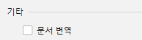

버전 2.9(2020-05-16)
Translation v2.9을 사용해주셔서 감사합니다. 해당 버전에는 다음과 같은 주요 업데이트가 포함되어 있습니다:
- 빠른 문서 번역 - 빠른 문서 번역을 지원
- 단어장을 txt로 내보내기 - 단어장 txt 파일로 내보내기 지원
이곳에서 해당 릴리스 노트를 확인하실 수 있습니다.
번역
빠른 문서 번역
기능을 구현해주신 Nikolay Tropin(JetBrains)님께 감사드립니다!
빠른 문서 번역에 대한 지원이 추가되었습니다. 이제 소스 코드의 문서 주석에 제한되지 않고 언제 어디서나 코드의 문서에 대해 번역을 진행할 수 있습니다.예를 들어 Windows에서 Ctrl + Q 단축키를 사용하여 빠른 문서를 조회할 때, 번역된 문서를 바로 확인할 수 있습니다.


빠른 문서 번역 옵션은 기본적으로 활성화되어 있으며, 플러그인 설정 페이지에서 해당 옵션을 비활성화 할 수 있습니다.
단어장
txt 파일로 내보내기

기능을 구현해주신 Kaiattrib님께 감사드립니다!